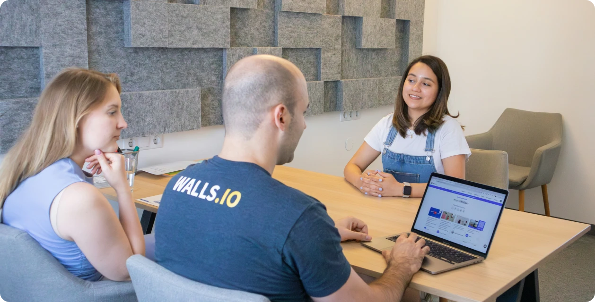
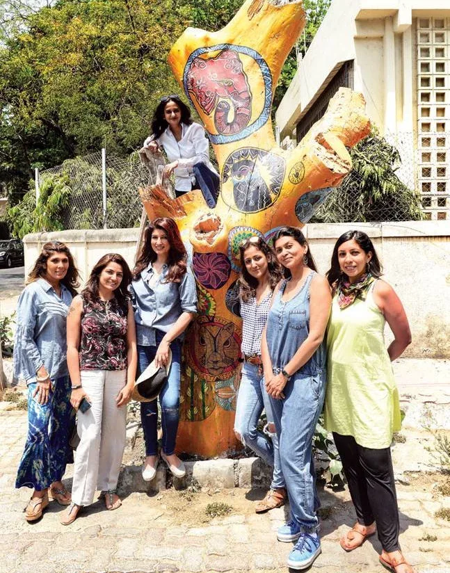
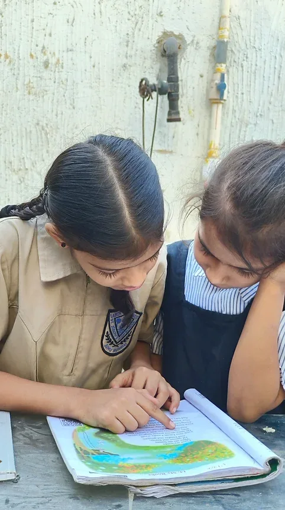
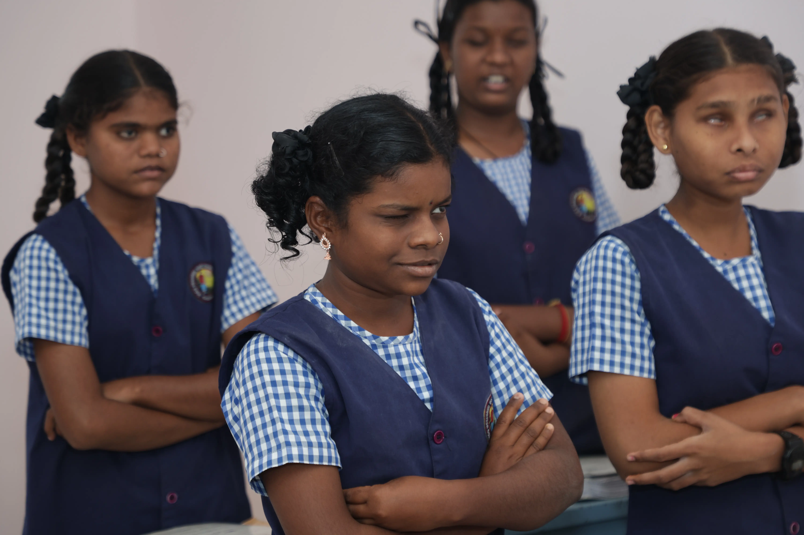
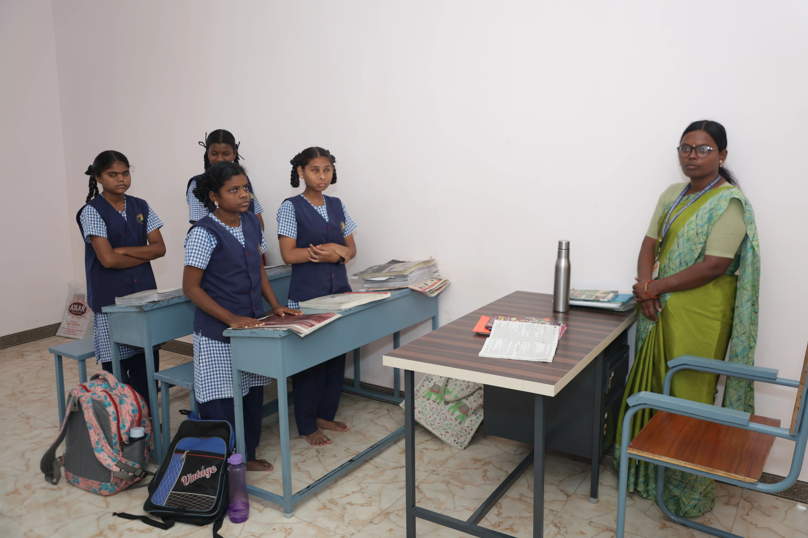
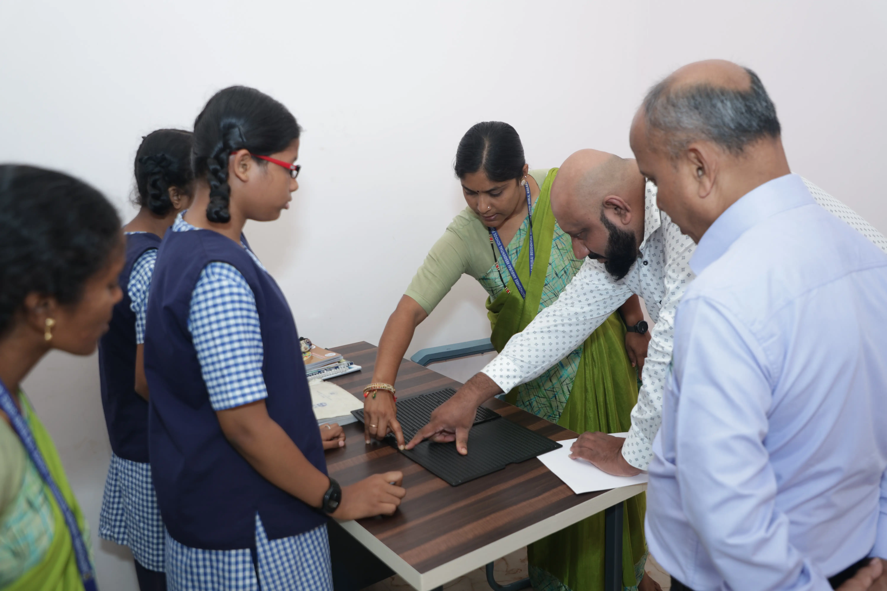
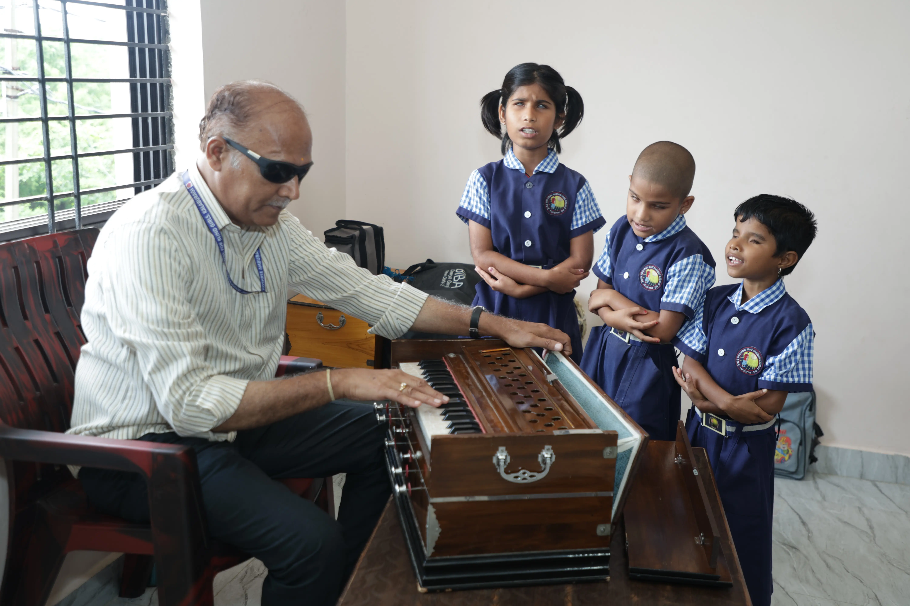
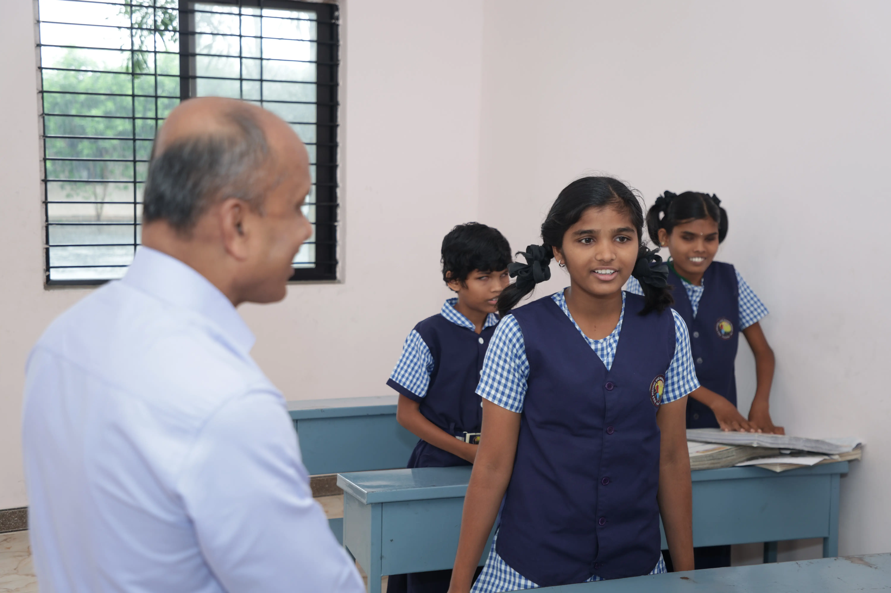

We regularly donate to and collaborate with these institutes dedicated to girl child education. Your contributions to this cause would be greatly appreciated by both the institutes and us. Please visit their websites for more information and to make a donation.
Jankibai Shikshan Sanstha's Vikas Vidyalaya is a renowned special education institution located in Dadar (West), Mumbai, dedicated to educating and empowering hearing-impaired (Divyang) children. Founded in the 1960s, it provides tailored academic, vocational, and extracurricular support to help its students thrive.
ASHA KIRAN FOUNDATION is the Ray of Hope for orphan, underprivileged and neglected children. It was established in 2008 by a young, dynamic and dedicated social worker Shri Pratap Kumar Pradhan with a view to “Save the girl child and stop female foeticide”.
Our organization is therefore working since last more than 26 years for these poor, orphan kids who are neglected by their own blood. We take good care of these kids who are being thrown on the roads or even in the garbage. Who actually require their mother’s warmth, love and her milk. Look at their destiny where they have been landed! This home is a new hope for all these people who have a constitutional right to live their life as per their choice, the right which has been deprived to them by their own people.

A safe, nurturing space where visually impaired girls are empowered through quality education, life skills, and confidence-building. Here, we focus not just on learning, but on creating independent, self-reliant futures. With vocational training, personal development, and care rooted in dignity and respect, we’re helping every girl grow into her full potential.

Founded in 1995 by Dr. Vithal Venkatesh Kamat, the Indira Venkatesh Foundation stands as a testament to the belief that women should not only be recipients of favors but self-proclaimed givers, empowering others and contributing positively to society. The foundation takes its name from Dr. Kamat's beloved mother, Indira Venkatesh, whose legacy of compassion and giving continues to inspire its mission.
One of the remarkable initiatives spearheaded by Dr. Kamat is the creation of the AAI (Mother) Museums in Mumbai and Pune. These museums pay homage to mothers worldwide, celebrating the vital role they have played throughout history in giving birth to, nurturing, and shaping great individuals. Through engaging exhibits, the AAI Museums shed light on the evolution of culture and customs, while also highlighting the profound influence of women in molding the destinies of great men.
At the core of the foundation's objectives is the aim to uplift the underprivileged and self-sufficient girls, transforming their lives through education. Dr. Kamat's vision goes beyond mere academics, as he believes in nurturing the entrepreneurial spirit within these young minds. By providing education and vocational training, the foundation equips girls with the tools and knowledge they need to become successful entrepreneurs, fostering self-reliance and empowerment.

One of the pivotal areas of focus for the Indira Venkatesh Foundation is collaborating with various well-known NGOs in India to raise literacy rates among girls. These carefully chosen organizations not only sponsor the education of these girls but also provide regular updates on their progress. This approach ensures that every rupee spent goes directly towards building a contented and educated populace, enabling the creation of a stronger and more prosperous nation.
Through its unwavering commitment to education, empowerment, and social work, the Indira Venkatesh Foundation continues to create a lasting impact in the lives of countless individuals. Dr. Kamat's visionary leadership and dedication to uplifting women and underprivileged communities have transformed the foundation into a beacon of hope and change.
As the foundation looks towards the future, its mission remains rooted in the belief that empowered women can catalyze positive change and drive social progress. The Indira Venkatesh Foundation serves as an inspiring reminder that when we invest in women's education and empowerment, we invest in the betterment of society as a whole. With each step forward, the foundation paves the way for a more equitable and inclusive world, where the legacy of Indira Venkatesh lives on through the lives of those it touches.
A safe, nurturing space where visually impaired girls are empowered through quality education, life skills, and confidence-building. Here, we focus not just on learning, but on creating independent, self-reliant futures. With vocational training, personal development, and care rooted in dignity and respect, we’re helping every girl grow into her full potential.




